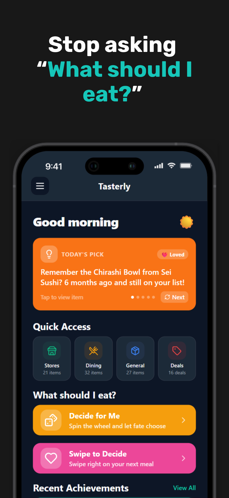

Live on the App Store
Stop asking what should I eat?
Tasterly remembers the restaurants, dishes, groceries, and cravings that actually worked for you. Rate what you try, build a taste profile, swipe through options, and decide dinner with less back-and-forth.
